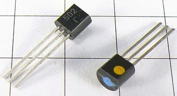
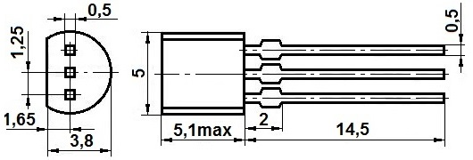
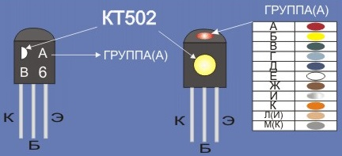

Транзисторы КТ502
Транзисторы КТ502 - кремниевые, низкочастотные усилительные, структуры - p-n-p.
Корпус - пластмассовый КТ-26 (ТО-92) с гибкими выводами, масса - около 0,3 г.


Рис. 1 - Внешний вид и размеры транзисторов КТ502
Маркировка кодированная:
- Знаковая - белый полукруг на корпусе сверху - слева, буква обозначающая группу сверху - справа.
- Цветовая - желтое пятно сбоку, цвет пятна сверху обозначает группу.

Рис. 2 - Маркировка и цоколевка транзисторов КТ502
Характеристики транзисторов КТ502
Таблица 1
| Прибор | Iк max, мА | Iк и max, мА | Uкэ0 гр, В | Uкб0 max, В | Uэб0 max, В | Pк max, мВт | T, °C | Tп max, °C | Tmax, °C |
|---|---|---|---|---|---|---|---|---|---|
| КТ502А | 150 | 350 | 25 | 40 | 5 | 350 | 25 | 125 | 85 |
| КТ502Б | 150 | 350 | 25 | 40 | 5 | 350 | 25 | 125 | 85 |
| КТ502В | 150 | 350 | 40 | 60 | 5 | 350 | 25 | 125 | 85 |
| КТ502Г | 150 | 350 | 40 | 60 | 5 | 350 | 25 | 125 | 85 |
| КТ502Д | 150 | 350 | 60 | 80 | 5 | 350 | 25 | 125 | 85 |
| КТ502Е | 150 | 350 | 80 | 90 | 5 | 350 | 25 | 125 | 85 |
Таблица 2
| Прибор | h21Э | Uкэ, В | Iэ, мА | Uкэ нас, В | Iкб0, мкА | fгр, МГц | Cк, пФ | Cэ, пФ | RТ п-с, °C/Вт |
|---|---|---|---|---|---|---|---|---|---|
| КТ502А | 40...120 | 5 | 10 | 0,6 | 1 | 5 | 20 | 15 | 214 |
| КТ502Б | 80...240 | 5 | 10 | 0,6 | 1 | 5 | 20 | 15 | 214 |
| КТ502В | 40...120 | 5 | 10 | 0,6 | 1 | 5 | 20 | 15 | 214 |
| КТ502Г | 80...240 | 5 | 10 | 0,6 | 1 | 5 | 20 | 15 | 214 |
| КТ502Д | 40...120 | 5 | 10 | 0,6 | 1 | 5 | 20 | 15 | 214 |
| КТ502Е | 40...120 | 5 | 10 | 0,6 | 1 | 5 | 20 | 15 | 214 |
Условные обозначения электрических параметров транзисторов
Источники
elektrikaetoprosto.ru - Транзисторы КТ502 - параметры, расположение выводов